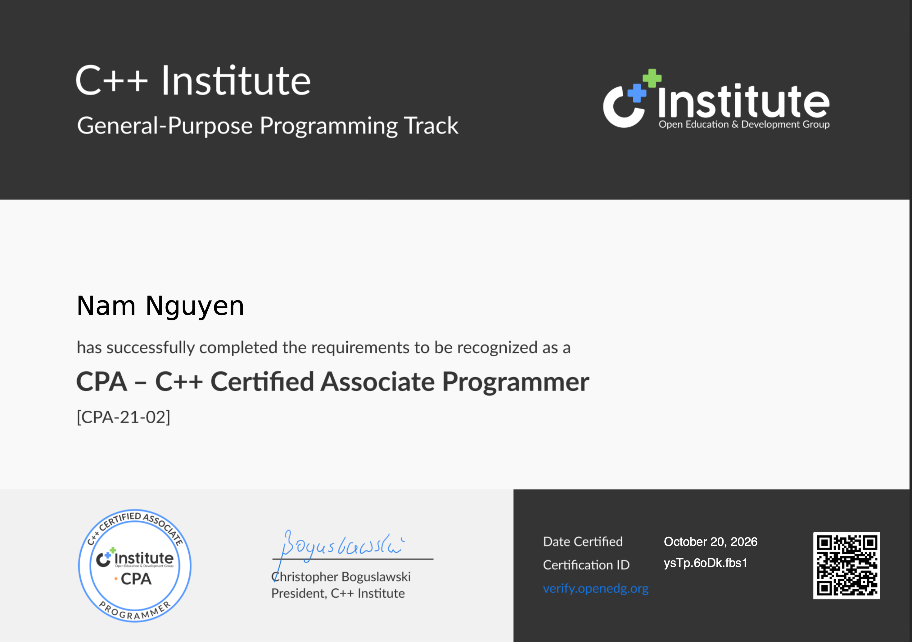
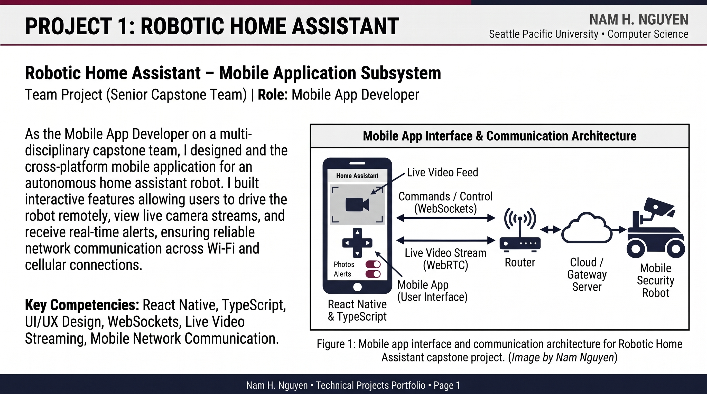
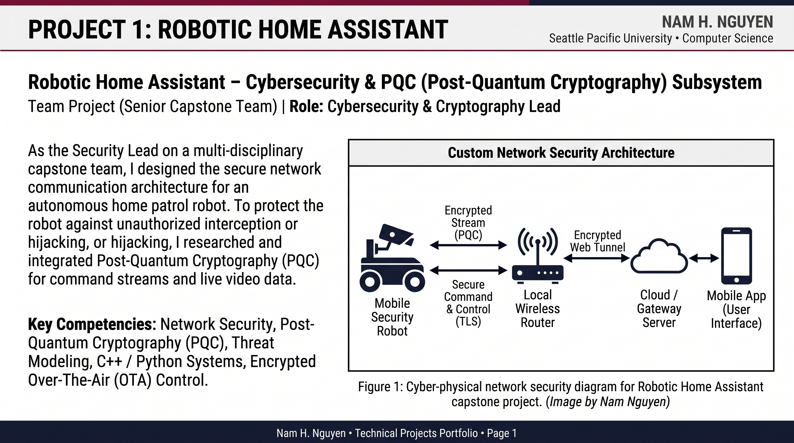
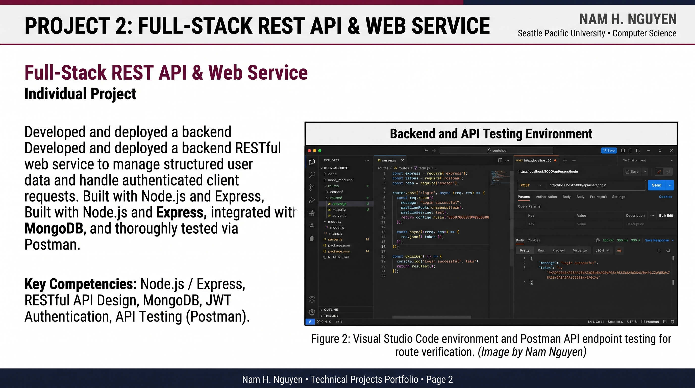
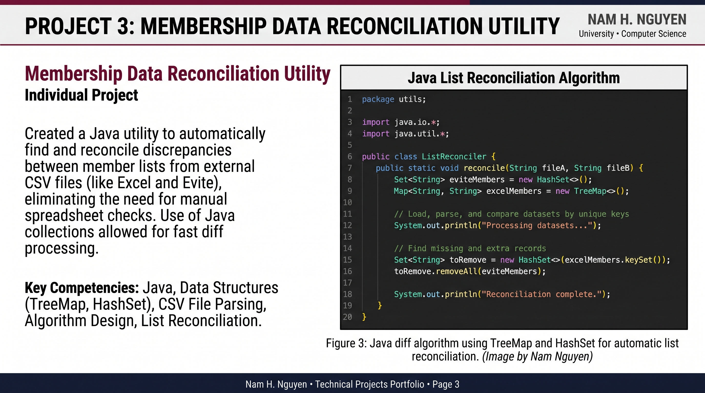
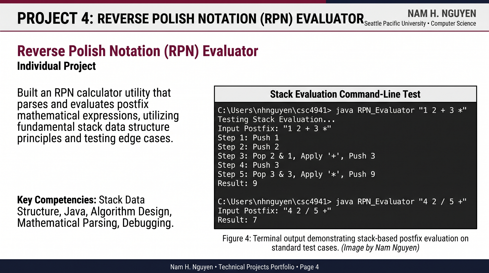

Computer Science Student at Seattle Pacific University | Expected Graduation: June 2027
I am a senior Computer Science student at Seattle Pacific University graduating in June 2027. My primary technical focus areas are C++ systems programming, corporate cybersecurity, and network security. I enjoy working close to the metal and understanding how memory management, low-level data structures, and cryptographic protocols operate under the hood to keep systems secure.
As my internship alternative for CSC 4941, I prepared for and passed the C++ Certified Associate Programmer (CPA) exam administered by the C++ Institute. Earning this credential validated my ability to trace, debug, and implement low-level C++ software, supporting my career focus in systems and security engineering.

Official CPA Certification document screenshot by Nam Nguyen (Badge design courtesy of OpenEDG C++ Institute).
For our senior capstone project, my team is building an autonomous home patrol robot that detects anomalies and lets homeowners check in remotely. I am developing the cross-platform mobile app for remote driving and live video streaming across Wi-Fi and cellular networks, while also designing the encrypted communication architecture and integrating Post-Quantum Cryptography (PQC) so app commands and camera feeds cannot be intercepted or hijacked.

Figure 1a: Mobile app interface and WebRTC/WebSockets communication flow. (Image by Nam Nguyen)

Figure 1b: End-to-end TLS and Post-Quantum Cryptography (PQC) network security architecture. (Image by Nam Nguyen)
Engineered and deployed a backend REST service managing structured record storage and user authentication flows. Configured routing with Express, maintained schema validation in MongoDB, and verified endpoint status responses and auth middleware using Postman suites.

Figure 2: Visual Studio Code environment and Postman API endpoint testing. (Image by Nam Nguyen)
Created a command-line Java reconciliation utility that automates discrepancy detection between roster files exported from different management platforms. Applied Java collection maps and key set diff algorithms to eliminate manual spreadsheet comparisons.

Figure 3: Java diff algorithm using TreeMap and HashSet for automatic list reconciliation. (Image by Nam Nguyen)
Implemented an RPN calculator evaluating postfix arithmetic expressions. Modeled stack push/pop evaluation routines, handling varied operator precedence and malformed inputs directly through the console.

Figure 4: Terminal output demonstrating stack-based postfix evaluation on standard test cases. (Image by Nam Nguyen)